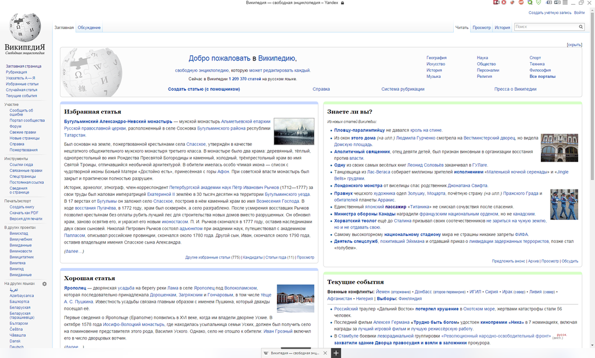

| Логотип | Название | Разработчик | Ссылка |
| Яндекс.Браузер | Яндекс | http://browser.yandex.com/ |
 Яндекс.Браузер — интернет-обозреватель, созданный компанией «Яндекс» на основе движка Blink, используемого в открытом веб-браузере Chromium. Впервые был представлен в 2012 году на технологической конференции Yet another Conference. Обозреватель от Яндекса занимает второе место на рынке настольных компьютеров в рунете. По состоянию на декабрь 2015 года, доля обозревателя в рунете составляет 8,9%.
Рекламный ролик